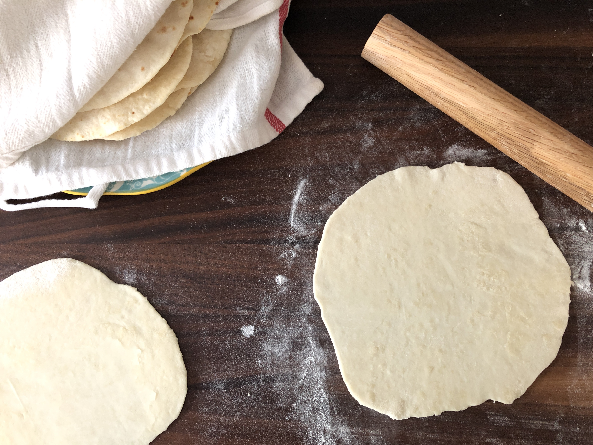

Flour Tortillas
There is nothing better than a fresh, hot, flour tortillas straight
off the comal. With ingredients you likely have in your pantry
you can enjoy fresh tortillas in less than an hour!
Ingredients
- 4 cups all purpose flour
- 2tsp baking powder
- 2tsp salt
- 4 tablespoons lard or crisco
- 1.5-2 cups hot water
Steps
- Whisk flour, salt and baking powder in a medium-large bowl.
- Measure out lard or crisco, add to the flour mixture, and incorporate
into the flour either by hand or with a fork. You're looking for a biscuit
dough consistency.
- Add 1.5 cups of hot water and mix until the dough is rough
in texture. It should be fairly sticky but not so sticky it
does not easily come off your hands. If the dough is tough and hard to knead,
add another half cup of water until a sticky, soft consistency is acheived.
Wet and wring out a clean dish towel or paper towel and place it over the dough.
Let it sit for 30 minutes.
- While the dough rests, preheat a cast iron pan on medium heat.
- Prepare your rolling surface with a light dusting of flour. Tear off a piece of dough
slightly smaller than a ping-pong ball. Roll out the tortilla as thin as it can go, flipping
and turning the disk as you go.
- Place the rolled tortilla into the dry hot pan. When bubbles appear on the surface, about 15-30 seconds,
use a fork or spatula to flip the tortilla. Cook an aditional 15-30 seconds.
- Place the finished tortilla on a plate lined with a clean dish towel. Continue with the
rest of the dough. Enjoy!
Back to main recipe page